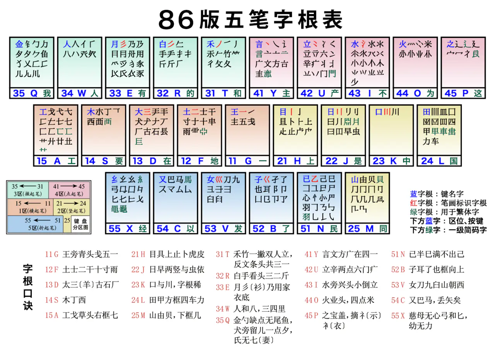

笔画分区

| 分区 | 笔画 |
|---|---|
| 1区 | 11 ～ 15 G F D S A 扩展 |
| 2区 | 21 ～ 25 H J K L M 扩展 |
| 3区 | 31 ～ 35 T R E W Q |
| 4区 | 41 ～ 45 Y U I O P |
| 5区 | 51 ～ 55 N B V C X 扩展 |
字根分配键位规则 不需要背口诀

从上图可以看出规则：
- 笔画重复加一笔的，键位号也跟着加一，如
- 一横：11 G、二横：12 F、三横：13 D；
- 一竖：21 H、二竖：22 J、三竖：23 K、四竖：24 L；
- 一撇：31 T、二撇：32 R、三撇：33 E。
- 看第二笔对应哪个分区，如
- 王 第二笔还是一横，也就是1区，在 11G；
- 土、士、干、十 第二笔是一竖，也就是2区，在12F。
- 相似的字根出现在什么区，大概在该区，如
- 王类似的，龶、戋、五 都在 11G；
- 雨、⻗、革字底，跟十类似，扩展出来放在12F。
大多数是符合规则的，顺带扩展类似的字根出来，所以不需要去背口诀，而是像新手那样打字，认键位，打着打着就熟悉了的！
回忆下，第一次接触键盘，怎么打字的，拼音、英文就是这么看着键位在哪，慢慢打，打着打着就熟悉上来了。
字型

全码
一个汉字的完整编码，即按照五笔字型的拆分规则，输入该字所有字根。
- 要输入的汉字刚好才出来是4个字根，很完美；
-
小于 4 个字根呢？如 “余”字，其拆解出的字根为“人+禾”，只有 2 个字根，打完这两个字根发现并没有出来“余”字，
需要 加上识别码(根据“末笔画所在区域”和“字型结构”确定)；
-
余的最后一笔是
捺（丶），要去4区找； -
余的字型是上下型，也就是代号2字型，42就是
U。
-
余的最后一笔是
- 大于 4 个呢？如 “键”字，拆解出的字根为“钅+彐+二+丨+廴”，共有 5 个字根，这时 只取前三个和最后一个，即“钅+彐+二+廴”。
笔画怎么打
横（一）、竖（丨）、撇（丿）、捺（丶）、折（乙），按下两次区号键 + LL，
如 竖（丨），其编码为 HHLL。
词语
- 两字，取两字的前两位编码，
如北（UXN）、京（YIU）= UXYI； - 三字，取前两个字的第一位编码，第三个字的前两位编码，
如计算机，计（YFH）、算（THA）、机（SM）= YTSM； - 四字，取每个字的第一位编码，
如山清水秀，山 (M)、清 (I)、水 (I)、秀 (T) = MIIT； - 五个字以上的，取一、二、三、末字的第一位编码，
如黄河之水天上来，黄 (A)、河 (I)、之 (P)、来 (G) = AIPG。
笔画、字根、部首 编码
一 GGLL
廾 AGTH
匚 AGN
艹 AGHH
工 AAAA
丨 HHLL
虍 HAV
卜 HHY
攴 HCU
刂 JHH
囗 LNHG
冂 MHN
殳 MCU
丿 TTLL
彳 TTTH
夂 TTNY
攵 TTGY
乇 TAV
豸 EER
彡 ETTT
勹 QTN
犭 QTE
饣 QNB
钅 QTGN
丶 YYLL
讠 YYN
亠 YYG
丬 UYGH
疒 UYGG
氵 IYYG
灬 OYYY
宀 PYYN
礻 PYI
衤 PUI
冖 PYN
廴 PNY
辶 PYNY
乙 NNLL
爿 NHDE
疋 NHI
忄 NYHY
屮 BHK
阝 BNH
凵 BNH
卩 BNH
彐 VNGG
厶 CNY
幺 XNNY
糸 XIU
弓 XNG